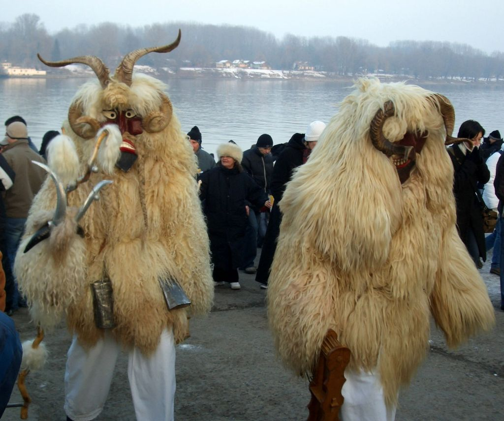

A busójárás egy tavaszváró, téltemető népszokás, amely a Mohácson és környékén élő, többségükben római katolikus délszlávok, a sokácok farsangi maszkos alakoskodásából és dramatikus néphagyományából ered. Ezt a szokást a sokácok poklade néven is nevezik, ami a karnevál szó horvát megfelelője. A mohácsi busójárás 2009-től szerepel az UNESCO szellemi örökség reprezentatív listáján. 2012 óta a mohácsi busójárás hungarikumnak számít, ami elsősorban a mohácsi civil társadalom, a busócsoportok, a maszkfaragók és jelmezkészítők sikere.
Szláv és török népek körében rendkívül sok helyen és néven ismertek hasonló erdei szellemek. Ilyen kukeri, csort, arsura, sürele, pitszen és még sok egyéb. A magyarországi busómaszkok a bolgár-török kukerihoz hasonlítanak leginkább. A Mohács környékére betelepült, balkáni eredetű sokácok hozták magukkal a népszokást, amely azután itt, a magyarországi horvát kultúrkörben nyerte el mai formáját és rekvizitumait. A népszokás megjelenéséről a 18. század végéről léteznek az első feljegyzések: legelőször egy 1783-as feljegyzés említi. Mohácsot 1687-ben szabadították fel a török fennhatóság alól, s a sokácok nagy arányú betelepítése a néptelen területekre csak ezt követően történt meg, valószínűleg 1687 és 1690 között. A második hullám az 1690-es évek végén mehetett végbe. Habár nincs történelmi alapja, kapcsolódik a busójáráshoz egy népi monda is, amely szerint a török hódítók elől a dunai mocsárvilágba, a Karapancsa mocsarába (ma a Duna–Dráva Nemzeti Park Béda-Karapancsa tájegysége a Mohácsi-sziget) menekült őslakos sokácok – megelégelve a török elnyomást, ijesztő, vérrel festett faálarcokba és birkabőrbe öltözve, a maguk készítette zajkeltő eszközökkel, csónakokkal átkelve a Dunán az éj leple alatt – elzavarták Mohácsról a törököket, akik az ijesztő maskarásoktól megrémülve fejvesztve menekültek a városból.
A vízkereszttől (január 6.) hamvazószerdáig, a nagyböjt kezdetéig tartó időszak, a farsang, az európai kultúrkörben tradicionálisan a vidám mulatságok és lakomák időszaka. Mohácson a farsangkor a busók a hagyományoknak megfelelően öltöznek fel. A legnagyobb mulatság farsangvasárnap van. A télűző fesztivál a „farsang farka” három napig, farsang vasárnapjától húshagyó keddig tart, amelynek csúcspontja a karnevál. A „műsor” fő elemei: a partraszállás, a jelmezes felvonulás és a koporsó vízre bocsátása. A partraszállás során a túlparti – ahogyan a helybéliek mondják – „Szigetből” (s Kismohácsról, amely Mohács város déli, belterületi része) eveznek át ladikokon a busók. Ezután a jelmezesek a Kóló térről a főtérre vonulnak. Sötétedéskor, a farsangi (télbúcsúztató) koporsó vízre bocsátása után az egybegyűltek máglyagyújtással égetik el a telet jelképező koporsót és a főtéren körtáncokat járnak. A fesztivál vendégeinek tanácsos a kicsiny gyermekeket a karnevál zajongásától távol tartani, mert a kicsik az ágyúlövéstől és erős kolompolástól, kerepléstől könnyen megijedhetnek. Figyelemmel kell lenni arra is, hogy a maszkokon a szemnek fúrt kis lyuk miatt a busóknak nincs teljes térlátásuk, ezért a mellettük, alattuk, felettük lévő tárgyakat és a fesztivál vendégeit csak részlegesen érzékelik.
A busó, a fűzfából faragott, hagyományosan állatvérrel festett, birkabőrcsuklyás maszkot viselő alak. A neves népművészek által faragott maszkok egyedi kivitelűek. A busó jellegzetes ruházata a bocskor, a csizma, a fehér vászongatya, a bundájával kifordított birkabőr derékban kötéllel vagy lánccal összekötve, amelyre egy, vagy több kolomp van felaggatva, valamint a vállon viselt tarisznya. Jellegzetes kellékei a kereplő, a buzogány, a hosszú fakürt. Gyakori a díszesen kifestett mosósúlyok (praćak), a vízhordófa (obramenica), a „famatyi” és teknőben busó baba hordozása is. A „szép busók” sokác népviseletbe öltözött, arcukat fátyollal eltakaró alakok. Farsangkor a busók cselekedeteinek megítélése jellemző rituális kontextusban történik. Nem vonatkoznak rájuk a hétköznapi erkölcsi szabályok. A térre, időre és cselekvésre sajátos, „felfüggesztett” állapot jellemző. A busó szerepnek nagy vonzereje van, hiszen az inkognitó és a maszk alatti „másik világ” egy sajátos tudatállapot, a transzformáció megélése is.
A busók összekötik Magyarországot Európával, hiszen térségünk számos pontján – Anatóliától az Ibériai-félszigetig – jelen vannak a mohácsi népszokáshoz rendkívüli módon hasonlatos, maszkos télűző népszokások, farsangi felvonulások.